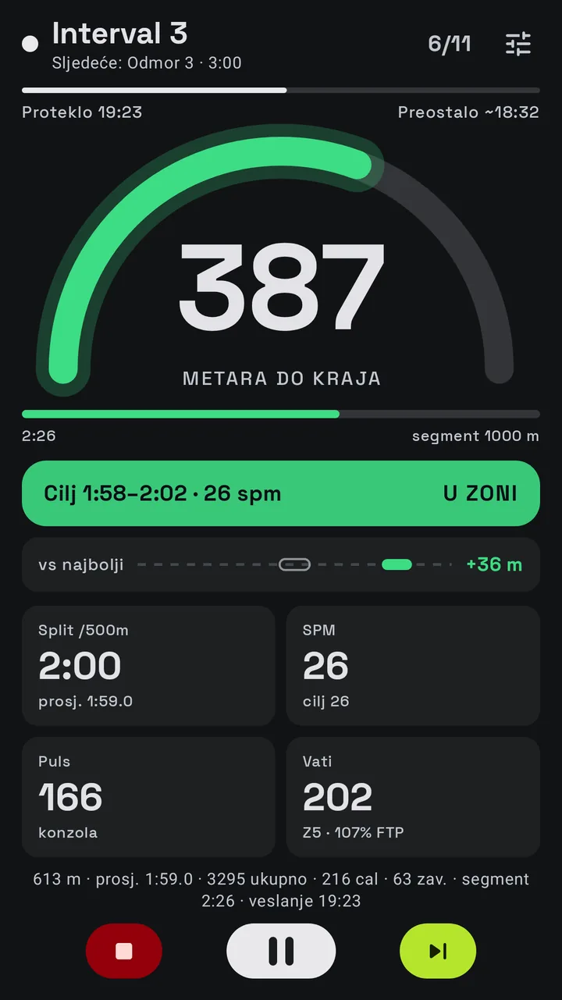
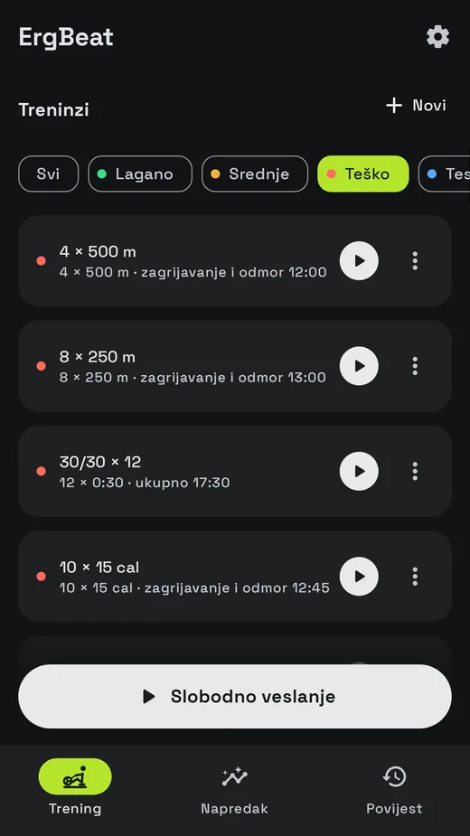
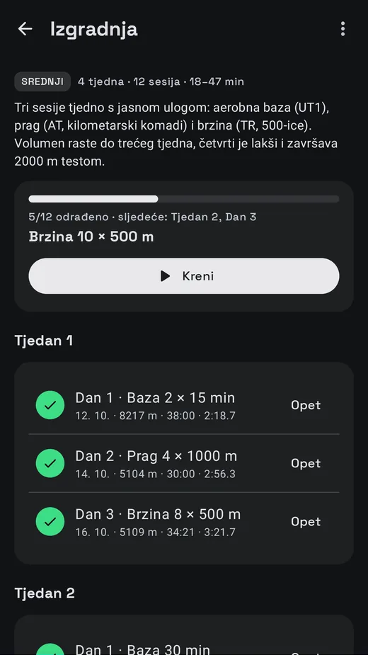
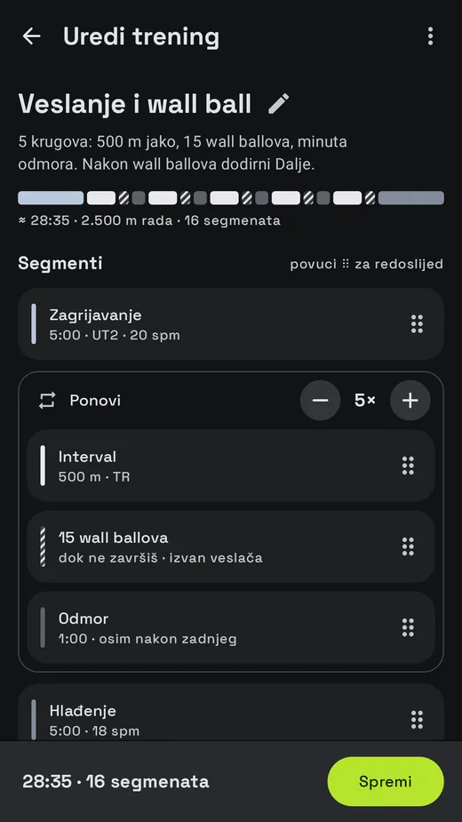
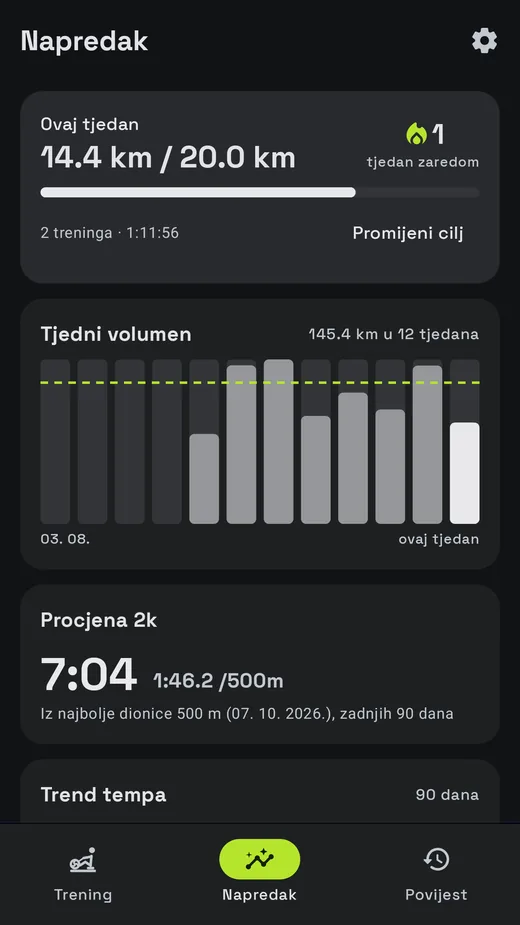

Android aplikacija za veslačke ergometre
Tvoj veslač, s trenerom na ekranu.
Spoji se preko Bluetootha, odaberi trening i veslaj uz pacer koji vidiš s druge strane sobe. Zone tempa iz tvog 2k, glasovne upute i tvoj najbolji trening kao duh pokraj tebe.
ErgBeat je u zatvorenom testiranju na Google Playu. Pridruži se, odveslaj nekoliko treninga i reci nam što misliš. Android 8.0 ili noviji, besplatno, uz Pro po želji.

Pacer koji čitaš sa sjedala.
Kuglica glumi ručku. Brzo prolazi kroz zaveslaj i polako se vraća u povratku, točno u tvom ciljanom tempu, a luk se puni sa svakim zaveslajem.
Kako radi
Tri koraka do prvog treninga.
Spoji veslač
Bilo koji veslač s Bluetooth FTMS-om ili Concept2 PM5. Dodaj prsni pojas ili sat koji emitira puls.
Odaberi trening
Prijedlog za danas, jedan od 21 ugrađenog treninga, dan iz programa ili vlastiti trening.
Veslaj
Pacer u obliku luka prolazi kroz zaveslaj i povratak u ciljanom tempu, a ekran ti javlja veslaš li prejako, u zoni ili prelagano.
Ekran treninga
Napravljen da se čita sa sjedala.
Zone tempa iz tvog 2k: od UT2 do AN, uz povratnu informaciju na svakom zaveslaju.
Utrka s duhom tvog najboljeg ili zadnjeg treninga, s razlikom u metrima.
Glas, zvučni signali i metronom, da ne moraš gledati u ekran na dugim dionicama.
Start na prvi zaveslaj, automatska pauza kad staneš, brze postavke bez izlaska iz treninga.
Uspravno ili položeno, radi i s ugašenim ekranom ili u malom prozoru (slika u slici).

Treninzi i programi
Veslaj po planu.
21 trening: ravnomjerno veslanje, intervali, sprintovi, piramida, ljestve tempa, WOD-ovi u CrossFit stilu s burpeejima ili wall ballovima te testovi na 500 m, 1k, 2k, 5k i 30 minuta.



- TemeljiPočetak veslanja
- IzgradnjaViše volumena
- VrhunacUtrka na 2k
- CrossFit kondicijaKondicija za box
Napredak
Gledaj kako se zbraja.
Tjedni cilj u metrima i niz uzastopnih tjedana.
Procjena 2k, trend tempa i isti trening uspoređen kroz vrijeme.
Svaki trening sa splitom, pulsom i snagom, po intervalima.
Osobni rekordi, sami se pronalaze u svakom treningu:

Garmin
I na zapešću.
ErgBeat za Garmin je besplatna Connect IQ aplikacija. Sat prikazuje trening i snima ga u Garmin Connect s brojkama s veslača, pulsom sa zapešća i krugom za svaki interval.
Radi na satovima fēnix 8 (43 mm, 47 mm, Pro 47 mm, Solar 47 mm i 51 mm), Forerunner 965 i Forerunner 265.


Radi s
Tvoj veslač, tvoj pojas, tvoje aplikacije.
Veslači s FTMS-om
Poput Rogue Echo Rowera. Podržava ga većina novijih Bluetooth veslača.
Concept2 PM5
S duljinom zaveslaja, vršnom silom i krivuljom sile svakog zaveslaja.
Pojas ili sat
Prsni pojas ili sat koji emitira puls.
Tvoje druge aplikacije
Health Connect. FIT i CSV za Garmin Connect, Stravu i intervals.icu (Pro).
Privatnost na prvom mjestu
Tvoji treninzi ostaju na tvom mobitelu.
ErgBeat tvoje podatke nikamo ne šalje. Ti odlučuješ što ćeš izvesti, podijeliti ili spremiti kao kopiju.
- Bez računa
- Bez oglasa
- Bez analitike
- Bez praćenja
Besplatno i Pro
Veslaj besplatno. Uzmi Pro za plan.
| Mogućnost | Besplatno | Pro |
|---|---|---|
| Spajanje veslača i pulsa, ekran treninga, pacer, glasovne upute | ✓ | ✓ |
| Treninzi | 4 i slobodno veslanje20 min ravnomjerno, 10 × 1 min, 4 × 500 m, 2k test | Svih 21 |
| Programi | – | 4 |
| Editor treninga i generator intervala | – | ✓ |
| Povijest, tjedni cilj, podsjetnici, Health Connect, Garmin sat | ✓ | ✓ |
| Duh, osobni rekordi, grafovi napretka, procjena 2k | – | ✓ |
| Trening sa snagom (FTP, zone snage) | – | ✓ |
| Izvoz u FIT i CSV | – | ✓ |
| Odabir kartica na ekranu treninga | – | ✓ |
4,99 € mjesečno, ili godišnje, ili jednom zauvijek
Pro se kupuje preko Google Playa. Cijena vrijedi za Hrvatsku, s PDV-om; točnu cijenu za tvoju zemlju prikazuje Google Play.
Česta pitanja
Pitanja.
Radi li s mojim veslačem?
Ako tvoj veslač ili njegova konzola podržava Bluetooth FTMS (većina novijih Bluetooth veslača), radi. Concept2 PM5 je podržan izravno. Nisi siguran? Instaliraj aplikaciju i dodirni gumb Veslač: ErgBeat pokaže što pronađe, a tu je i demo veslač da sve isprobaš bez sprave.
Treba li mi račun?
Ne. Nema računa ni prijave.
Gdje su moji podaci?
Na tvom mobitelu. Možeš ih spremiti kao kopiju u datoteku po izboru (npr. na Google Driveu) i izvesti treninge kao FIT ili CSV.
Mogu li ga koristiti sa Stravom ili Garmin Connectom?
Da. Aplikacija za Garmin sat snima ravno u Garmin Connect, a Pro izvozi FIT datoteke za Stravu, Garmin Connect i intervals.icu.
Radi li s ugašenim ekranom?
Da. Trening teče i s ugašenim ekranom, uz obavijest na zaključanom ekranu.
Na kojim je jezicima?
Engleski, hrvatski, njemački, španjolski, francuski, talijanski, portugalski, poljski i nizozemski.
Našao sam grešku ili imam ideju.
Koristi Pošalji povratnu informaciju u aplikaciji ili piši na jaan.dsgn@gmail.com.